How To Play Constellation Control
Goals
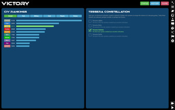Constellation Control is a 4X space strategy game. Take control of a young, space-faring civilization and guide it to success by settling new worlds, researching technologies, building fleets of ships for defense, and searching out the mysteries of the galaxy.
Constellation Control can be won by either of:
- Destroying all other civilizations ("Last Man Standing")
- Completing one of several different victory recipes
Victory Recipes
Victory Recipes are victory conditions composed of smaller goals. A recipe is completed by acquiring all of the necessary Victory Ingredients for that recipe. Currently, the only implemented recipe is the Tessera Constellation recipe. You complete this recipe by settling the four special planets of the Tessera Constellation, an ancient subspace network left behind by an extinct alien race. The first civilization to own all four planets at once wins immediately.
Galaxy & UI
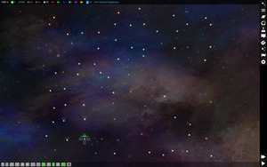 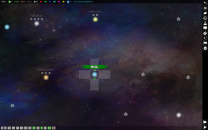
The game is played on a 2D galaxy map. Click and drag the map to scroll. Use the mousewheel or two-finger-pinch to zoom the map.
The map will display Stars, Anomalies, and Fleets. You can click any of these objects for more information.
Zooming the map out very far will switch to "strategic view" with a simplified representation. Zooming in will show the tactical view with details.
On the right side is the navigation bar with links to the main menu, list of planets, list of fleets, economy, ship designer, technology, diplomacy, victory status and civilization rankings, and game configuration.
On the top of the screen is the status visor showing how many planets you have settled, resource levels, current research project, and other critical info.
On the bottom is the button bar for map navigation and quickly toggling UI features.
You can clear the screen of sub menus at any time by clicking the "CLEAR" button in the top right of the screen.
Return to the main menu by clicking the "Hamburger" icon below the clear button.
Starting a New Game
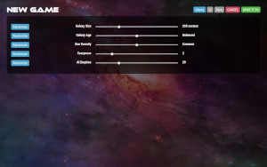When starting a new game, you may choose galaxy setup options:
- Galaxy Size: The amount of physical space to create as measured in "sectors". Each sector is roughly the size of one star and its immediate surroundings.
- Star Density: The percentage of space that should be populated by stars.
- AIs: The number of AI civilizations to populate the galaxy with.
- Galaxy Age: Younger galaxies tend to have energetic stars with resource-poor planets. Older galaxies have abundant resources, but little energy, making progress slow.
- Crazyness: Affects how extreme the dimensions of the galaxy are, the shape of star formations, and occurrence of whacky star systems and planet attributes, the frequency and severity of events, and the presence of game-changing scenarios and galactic intrigues.
Stars
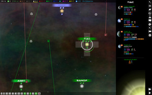Stars have 1-5 planets which can be colonized by civilizations. You can see planets under the star's title if the planet is within scanning range. You can view the planet details if the star has been explored by one of your fleets.
Fleets park at stars. You can see parked fleets under the star. Click a fleet for more information.
Civs own individual planets within a star system. They cannot own the star itself.
Star colors influence what sort of planets are found there, on a spectrum of young/hot (blue) to old/cool (red). Young stars often have planets with high energy but low in resources. Planets around older, cooler stars tend to have more resources and generally support life better, but are low in energy. There are rare purple and green stars as well as black hole systems which can contain extreme and bizarre planets types not found anywhere else.
Stars that are within travel range of your fleets have visible name tags and number of planets, but you will not be able to see any more details until you send a fleet there. Once a fleet arrives, you can view planet information and the star is marked as "explored". Stars that have planets settled by any civ will have a colored name tag.
Anomalies

Space is full of strange anomalies that your fleets can explore. If you park on an anomaly with a fleet that has one or more ships equiped with a Space Lab, then it will automatically start researching the anomaly. When research is complete, something wonderful, interesting, or possibly terrifying may happen!
There are also hyperspace anomalies that do not appear on the galaxy map. You can hunt for these unseen anomalies by sending a fleet on a hyperspace research mission for a period of turns. When their mission is over, they will report their findings, if any.
Fleets
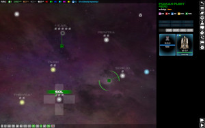 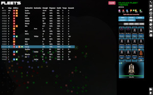Fleets are collections of space ships owned by one civ.
Fleets travel between stars and anomalies in a straight line through empty space (this is a "no starlanes" game). Destinations must be within the range of the fleet. To move a fleet, click the fleet you want to move and then right-click the desired destination. For other devices, you can click "MOVE" and then click the destination. While in transit, fleets cannot be redirected until they reach their destination.
Ships in a fleet can be split into several smaller fleets and travel to different destinations. Ships at a single star system will always combine to form a single fleet. To split a fleet, click the ships you want to send and then click "MOVE" or right-click another star. The ships you selected will be split into a new fleet and rerouted.
Fleets with a colony ship can colonize new worlds by clicking "COLONIZE" if the planet is habitable by your civ.
If a fleet contains at least one ship with a Space Lab, you can research anomalies on the map by parking the fleet on an anomaly. You can also send the fleet on research missions off the map by clicking "MISSION". During research missions, fleets will not be visible on the map and cannot be recalled. The fleet will hunt for unseen hyperspace anomalies and return after the length of time you set for it. Fleets on longer missions have higher chances of discovering anomalies. Some anomalies are dangerous, so it is recommended that you escort your research vessels with combat ships as well.
Fleets with ships equipped with weapons may engage other fleets in combat by clicking "ATTACK".
Fleets with ships equipped with ground combat units can invade foreign colonized worlds if the world is habitable by your civ.
Fleets with ships that can hold ground combat units can transfer ground units between the fleet and the planets it may be parked on by clicking "TROOPS".
Planets
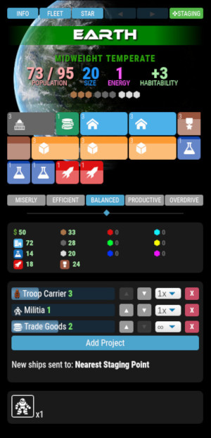Planets are settled by sending a Colony Ship to the planet's star and clicking COLONIZE on the planet or from the fleet view. Once a planet is settled by you, you can direct its economy and production goals.
Planets are defined by these features:
- Size: Determines how many zones you can build.
- Energy: Determines how fast zones can be built.
- Resources: Which raw materials are available for mining and in what quantity.
- Specials: Special features that can help or hinder a planet.
- Atmosphere, Temperature, and Gravity: Determines how habitable the planet is for your race.
Habitability

Atmosphere, temperature, and gravity create a three-axis "habitability cube". Each feature has 5 values, creating 5x5x5 = 125 possible world types that can exist.
Your species has a preferred environment but may exist on alien worlds with similar environments. You can expand the range of worlds you can live on by increasing your Adaptation. Adaptation measures how far away from your preferred environment your people can still live in. Researching Habitation technology will increase adaptation over time. Improved adaptation also increases how large you can build up zones, thus how "tall" a planet can get. Civilizations generally start with an Adaptation of +1, meaning that they can only live on one very specific environment. Increasing adaptation to +2 means that you can settle worlds one "hop" away from your ideal environment and that your homeworld can now support more zone growth.
Each alien civilization has its own preferred environment, so you will not necessarily be competing with them for planets. However, be wary of aliens with similar environmental needs as your own.
Resources
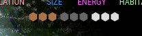There are 9 unique resource types that can be mined (identified by color). The planet will display between 0-5 units of each resource based on its availability on that planet. Resources with 5 icons will have 5x the output of a single icon. Mine resources by building Mining zones.
Resource types are:
- Organic Materials (O) - abundant
- Silicates (S) - abundant
- Metals (M) - abundant
- Redium (R) - uncommon
- Verdagen (G) - uncommon
- Bluetonium (B) - uncommon
- Cyanite (C) - rare
- Yellowtron (Y) - rare
- Violetronium (V) - rare
Zoning
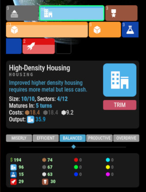 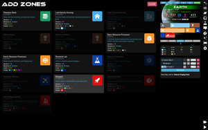Planets are primarily directed through Zoning. Zoning tells the planet what sort of activity to conduct. Each zone takes input (cash and resources) and outputs a product depending on the type of zone.
Each planet has a number Sectors, according to its size. This determines how many zones you can build on it. These are initially seen as empty slots on the planet view.
Zones are defined by:
- Type: General category this zone falls into.
- Minimum Sectors: Minimum number of "slots" needed to create a new zone.
- Maximum Sectors: Maximum number of "slots" a zone will grow into.
- Size: Output multiplier. (How tall a zone is).
- Value: How "complete" the zone construction is compared to its full potential size (seen as a white "water line" on the zone).
- Cost: Resources this zone needs to do its job.
- Output: What this zone creates.
The major categories of zones you can create are Government, Mining, Housing, Research, Stardock, Defense, Economy, and Special. Within each basic category are specific types with specific effects.
Build zones by clicking on any empty sector. When you create a zone, the zone starts completely undeveloped. Over time it will gradually build up if you feed it the necessary resources it requires each turn. If you do not have enough resources, it will shrink.
A single zone placed on a single sector has a size of 1. If your adaptation allows, zones may fuse with adjacent zones when they are completely built. This new zone will take up the same number of sectors as the original single zones did, but its maximum size is now the factorial of the total number of sectors it occupies! This means that creating larger zones by means of improved adaptation greatly increases the output potential.
EXAMPLE: You build 4 housing zones on a planet with adaptation=4. Over time the zones grow to completion. They will fuse with other completed zones, one at a time. This will first create 2 zones of 2 sectors each, then 1 zone of 4 sectors. This final 4-sector zone will have a size, not of 4, but of 4 + 3 + 2 + 1 = 10.
Throttle
You can alter your economic strategy by changing the planetary production throttle. Overdriving the planet will increase overall production, but waste money and resources. Setting it to be more efficient will consume far less resources, but the output will be hindered.
- Miserly: Resource Usage: 25%. Production: 50%. Speed: 50%.
- Efficient: Resource Usage: 62%. Production: 75%. Speed: 75%.
- Balanced: Resource Usage: 100%. Production: 100%. Speed: 100%.
- Productive: Resource Usage: 150%. Production: 125%. Speed: 125%.
- Overdrive: Resource Usage: 200%. Production: 150%. Speed: 150%.
You cannot throttle individual zones.
Building Queue
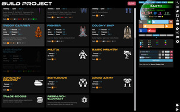Each planet can build a number of physical products including ships, ground units, planetary defenses, and make-work programs designed to put unused production capacity to good use generating cash or research.
Add building projects to the building queue by clicking "Add Project" and selecting from the available projects.
Different projects have different costs. Ships require ship labor generated by stardock-type zones, while ground units require military labor created by military zones. Projects will usually require additional material resources to complete. Because ships and ground units use two different kinds of labor, the building queue can work on both types of projects at once.
Projects in the building queue can be set to build a specific number of units (1-5) or repeat-build forever.
If you have military or stardock zones creating labor that you are not using to build ground units and ships, you can add a make-work project. These will capture unused labor and turn it into cash or research at a reduced rate. This makes sure labor is not entirely wasted.
If you remove items from the build queue, labor and resources already built into that project are thrown away. They cannot be put towards a different project.
When ships are built, they can be automatically sent to another location, either a specific star system or the nearest designated staging point. You can mark a star system as a staging point by viewing any of your own planets in that system and clicking the STAGING button at the top. Staging points are marked on the map with a large cross behind the star. Your homeworld is your initial staging point by default.
Economy
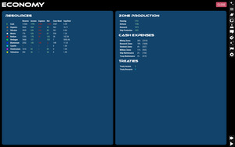Each planet has a micro-economy determined by the planets natural resources and value. This planetary value then determines how much tax the population of the planet provides. There is a global 20% tax rate. To make money, you need to build housing zones which raise the maximum planetary population. As the population naturally rises, so will your tax revenue.
Over the course of the game you will acquire raw resources from mining and use those resources to build other things. You will need to watch how resources are being obtained and used so that you do not run out. When resources are low, it affects your entire galactic economy and usage of limited resources is rationed. Zones will only grow if they have 100% of the resources they require. If even one has a shortfall, the zone will decline and output will be limited. Prolonged shortages can decimate a civilization's infrastructure (including your enemy's!)
Ship Combat
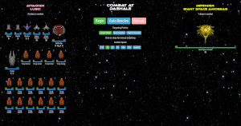Opposing fleets can initiate combat with each other if either fleet is equipped with weapons.
When combat begins, you will see your fleet on one side and the opposing fleet on the other side. You will have the opportunity to click any high priority targets on the opposing fleet and to choose an engagement strategy.
Combat is played in simulated 5-second increments in "weapon time", not in turn-based combat. This means that weapons fire when ready and repeat at their inherent reload speed. All ships are analyzed for weapon reload speed and combat speed (initiative) at the beginning of combat. When you click "Begin", all ships from both sides will begin firing at targets in order by their weapon's initiative. At the end of a simulated 5-seconds, you will have the opportunity to reselect priority targets, change engagement strategies, or flee. Combat continues until one fleet is entirely destroyed or when both fleets are out of ammo.
Because all weapons have limited ammo, it is possible that combat may end with a stalemate. Combat can be re-engaged on the next turn after weapons have been restocked.
Ground Combat
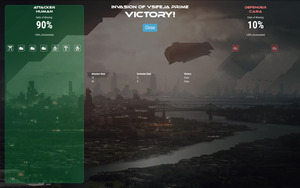Ground combat occurs when a fleet with troop ships containing ground units chooses to "Invade" an enemy planet. Planets being invaded must be within the habitability range of the attacker. (This means that planets outside the habitability range of the attacker are inherently safe from ground invasions.)
Before combat begins, you may be able to select an invasion strategy or to increase your odds by throwing money at it.
Ground combat is entirely automated. Ground units will square off in one-on-one battles with each other. A dice roll from each unit is cast based on each unit's damage potential and the highest roll wins. The loser is destroyed and the winner remains unscathed. If both units roll the same number, both units are destroyed. It is possible that a ground invasion may end in a "Pyrrhic victory", with all units on both sides having been lost and the defender maintaining control of the planet.
If a planet is captured, control instantly goes to the winner. Zones and population remain intact unless the invasion strategy caused collateral damage (NOT IMPLEMENTED).
Diplomacy
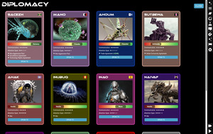You can engage in diplomacy with other alien civs. You will be notified when another civ is within range of communication.
In order to communicate with other civs, you must:
- Be within physical range of each other. Range is determined by the lesser of your best ship engine technologies.
- Have compatible communication skills.
- Have a minimum amount of the leader's remaining attention span.
The Diplomacy screen will show each civ that you have met and their status. Each civ will have:
- A "love nub" relationship meter that indicates how you are getting along.
- An "attention span" meter that indicates how much of the diplomats attention you can use up in an audience.
- A list of currently enacted treaties.
Communication
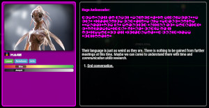Each civ including your own has a range on a "communication scale" that it knows how to communicate across. When two civs have overlapping ranges, they can communicate with each other (hold audiences). If there is little or no overlap, you cannot interact with them and they will appear to talk gibberish. You can increase your own civ's communication ability by researching "Communication Skills" technology.
Your options available during an audience are determined by how much your communication skills overlap. Civs with a high level of communication will be able to make better deals, trade more sophisticated technology, and create more meaningful political arrangements (treaties). Higher communication ability also slightly increases overall goodwill between civs.
Audiences
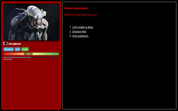When holding an audience with another civ, you can make treaties, declare war, and trade technologies, resources, and even entire planets.
Options available will be limited by your mutual communication abilities and by the other leader's disposition. They will be unwilling to deal much with you if you are not on good terms. This means that the best treaties and trade deals available require friendly relationships.
Each leader has an attention span that gets depleted as you engage with them in audiences and propose deals. Bigger or more important deals will deplete the attention span of the leader more than small deals. As their attention span gets lower, leaders will be less likely to accept deals and will eventually leave. You will not be able to hold an audience with a leader who's attention span is below their minimum. Each leader's attention span slow regenerates each turn according to the leader's unique AI personality. You will also find that some leaders will only ever have a short attention span and that waiting will not improve it.
Trades
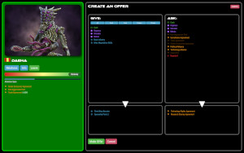When proposing trade deals, you will put items you want to give in your column from a list of things available, and place things you want to receive in their column from their list of things available.
When you propose the trade, the leader will think about it for a moment and either accept, refuse, or propose a counter-offer. You also have the ability to counter offers from other leaders, however each counter offer depletes their attention span, meaning that if you bicker over it too much, they will walk away from the table.
Each civ leader has a unique AI personality that will approach deal making differently. Some will willingly trade anything, while others are self-centered hard-bargainers.
If the other leader thinks it has received a good deal, it will improve your mutual relationship. Making demands or "unfair" deals will reduce the relationship. Each leader has their own definition of "good deal". Thus, each trade that you propose is a bit of a gamble, and you learn from your mistakes.
Treaties
Accepting a treaty with another civ creates a binding arrangement. Treaties do not need to be renewed. Violating or backing out of a treaty is very damaging for your relationship and for your galactic reputation. Treaties that you can enact include:
- Non-Aggression Pact: Parties agree not to attack each other.
- Surveillance Agreement: Parties share their information on explored star systems and visibility of local fleet movement.
- Research Sharing Agreement: Each civ earns up to 15% of the total research income of the other. Research generated increases over time until fully vested after 50 turns.
- Trade Agreement: Each civ earns up to 15% of the total cash income of the other. Money generated increases over time until fully vested after 50 turns.
- Technology Rights Agreement: AKA "tech brokering". Parties agree not to re-trade technologies they trade with each other. Having this agreement in place limits your ability to re-trade techs to third-parties, but also makes the other leader more likely to accept tech trade offers to begin with, knowing it will not be abused.
- Stellar Exclusivity Agreement: Parties agree not to settle planets in each other's star systems. Existing colonies are grandfathered in.
- Political Alliance: Parties agree to come to each other's aid in times of need (NOT IMPLEMENTED YET).
- Technology Alliance: Parties automatically trade all current and future technologies.
- Cease-Fire: Ends a War. Both parties agree not to attack each other. Not as strong as a Non-Aggression Pact, but helps build good will on the road to diplomatic recovery.
Technology
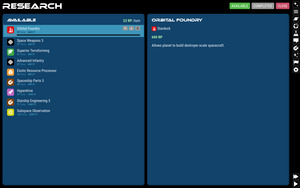 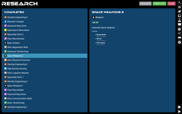You can research technology by creating research-type planetary zones that output research points (RP). Research points are spent on technologies in your list of available technologies for research, in order. All RPs are spent on the next tech in the list until it is completed. After this, the next tech will automatically start being researched. You can change the project order by clicking on a project and moving it up or down.
The technologies available are determined by which technologies you already have. Each tech in the game has a list of prerequisite techs. If all prerequisites have been acquired by your civ, that tech then becomes available for research. (i.e. Constellation Control does not have a traditional "tech tree". It is more of a "tech graph".)
When you complete a research project, it automatically yields the individual technologies bundled in with it. This means that a research project can yield more than one tech at a time. Example: Researching "Space Weapons 1" yields all of: Lightning Striker, Turbo Laser, Space Cannon, Buckshot Blaster, and Nuclear Missiles.
Besides research, technology can be acquired by trading with other civs, scrapping captured ships, invading enemy planets, espionage, and exploring space anomalies. Some technologies are not researcheable, but must be found, stolen, reverse-engineered, or received. [NOT IMPLEMENTED]
Ship Design
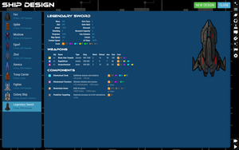You can design ships and build your custom designs in planetary build queues. When designing a ship, you can add Weapons and Components until the ship reaches maximum mass size (which can be increased with technology).
Ship designs receive a discount in labor and resources as you physically build more of them. The more you build, the greater the discount. Because of this, there is a cost advantage to building smaller ships and sticking with reliable older-technology designs.
Ship designs have the following characteristics:
- Mass: Total mass of the ship, determines size class designation and labor to produce.
- Size Class: A letter designation to indicate ship size, starting with "A". Each letter is twice as large as the previous. ("B" is 2x "A", while "C" is 4x "A").
- Hull (HP): Hit points of hull.
- Armor (AP): Hit points of armor.
- Shield: Damage subtracted from every incoming weapon strike.
- Map Speed: Minimum speed ship can travel on the map. (Fleets only move as fast as the slowest ship).
- Combat Speed: Increases initiative on the first combat round, makes craft harder to hit.
- Firepower: Total combined output of all weapons, assuming all shots fired.
- AI Value (milval): Military value of the ship as perceived by the AI. A general indicator of strength.
- Cost: An array of resources required to build this ship, including labor (produced by stardock planet zones).
- Discount %: How much of a discount this model gets in production.
Additionally, each design can have special designations depending on what components are installed:
- Colonizer: Ship has a colony module for settling new planets.
- Research Vessel: Ship has a space lab equipped to research space anomalies.
- Carrier: Ship has a troop transport module for carrying ground units for planetary invasion.
- Fighter: Ship has space-combat weapons.
- Bomber: Ship has weapons capable of ground bombardment [NOT IMPLEMENTED].
Components
Simply click any available component to add it to your design.
Costs for each component are either discrete (lump sum for the whole component) or per-mass (costs more as the ship gets bigger). For example, a Space Lab is a fixed size with a fixed cost, while Nuclear Engines will scale as you add more stuff to the design and drives the cost up higher.
Some components are mutually exclusive. For example, you can add only one kind of engine, armor, or shield at a time.
Weapons
Click a weapon to add it to your design. Afterwards, you can increase or decrease the quantity of that weapon.
Each weapon has the following attributes:
- Type: Influences what kind of defenses the weapon is effective against [NOT IMPLEMENTED].
- Damage: The base damage range the weapon inflicts. May be additionally influenced by other techs or components active in combat.
- Shots: AKA "ammo". The total number of times this weapon can be fired in combat. (There are no unlimited weapons.)
- Reload: The speed in simulated seconds at which the weapon can fire again. The lower the number, the faster the weapon fires and the sooner it comes into play in combat.
- Accuracy: Improves to-hit calculation.
- Mass: How big the weapon is (increasing the design size).
- Cost: An array of resources required to build this item, including labor (produced by stardock planet zones).
When space combat weapons fire at a target, the following happens:
- To-Hit Calculation: The weapon's accuracy combined with the target's combat speed and the difference in size between the two ships determines whether or not the weapon connects at all. If the weapon hits, then:
- Damage Roll: The weapon will randomly roll for damage inflicted. This may be reduced by shields and modified by other technologies and components in play.
- If both the armor and hull points of the target are depleted, the target is destroyed.
All weapons strike instantly. There is no "travel time".
Events
A robust events system is programmed but currently has no content. Events can be triggered randomly or in response to game activity, including other events. Events can even be chained into a Choose Your Own Adventure graph for the full space-opera experience.
Each event has the following attributes:
- Title
- Description: Text to display to the player.
- Effect: Function to run when the event is played. Literally any game effect that a programmer can think of.
- Image: Optional image to display.
- Options: A list of possible reactions to present to the player to choose from.
When an event with no options is played, it is a classic 4X "Random Event"; it has some programmed effect and you just deal with it.
Events with included options give the player a choice of how to react. When a player makes a selection, the following happens:
- Any optional immediate actions are triggered ("onChoose").
- Any optional chained events are followed.
Chained events let you program a series of events they may occur. Chained events are an array of possible events that happen in response to an option being selected by the player. Each chained event may have any of these attributes:
- Trigger: Which event in the Event Library will be triggered.
- Chance: The chance that this event will be triggered if there are multiple chained events.
- Delay: How many turns to wait to trigger the following event. It can be a range.
With this simple event system, it is possible to write an entire sci-fi novel into the game with multiple outcomes, successive actions built on previous choices, diplomatic intrigues, and all manner of whacky stuff with real in-game effects. The universe is the limit!